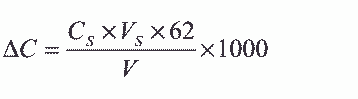
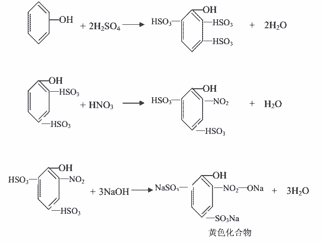
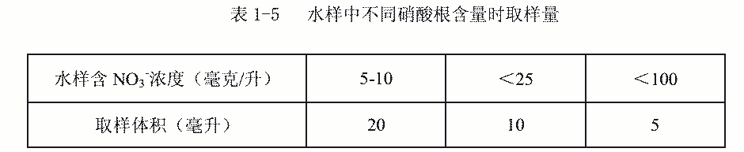

20.硝酸根的测定
甲 离子选择电极法
本方法适用于循环冷却水和天然水中硝酸根含量的测定。其测定范围： 3.1～6200mg/L。
1．原理
PVC 液膜硝酸根离子选择性与参比电极联用，具有选择性地将溶液中硝酸根离子活度转
变成一定电位的功能。在 pH3～9 的条件下，10-1～10-5mol/L 的范围内，电极电位和硝酸根
离子活度的关系符合能司特方程，所以硝酸根离子选择性电极与参比电极间的电位与硝酸根
离子浓度的对数成正比。
2．试剂
2．1 1×10-1mol/L 硝酸钾标准溶液
称取经 105℃烘干 2 小时的硝酸钾 10.109g，用少量水溶解，移入 1000mL 容量瓶中，稀
释至刻度，摇匀。
2．2 硝酸钾标准工作系列溶液
用 1×10-1mol/L 硝酸钾标准溶液，依次用水稀释成 1×10-2、1×10-3、1×10-4、1×10-5mol/L
标准工作系列溶液。
2．3 缓冲溶液
称取 6.66g 硫酸铝、3.12g 硫酸银、1.24g 硼酸、1.94g 氨基磺酸溶于 400mL 水中，用
0.1mol/L NaOH 调 pH=3，用水稀释至 1000mL，摇匀。
3．仪器
3．1 离子计。
3．2 电磁搅拌器。
3．3 403 型硝酸根离子选择电极。
3．4 802 型单液接甘汞电极。
4．分析步骤
标准加入法
4．1 按电极和仪器说明书进行安装，调试和预处理。
4．2 根据水样含量选择两个浓度相差 10 倍的硝酸钾标准溶液，各取 50mL，加缓冲溶
液 10mL，用水洗值大于 260mV 的电极测其电位 E1´和 E2´并计算其斜率 S：
S= │E1´-E2´│
4．3 取水样 50mL，加缓冲溶液 10mL，用水洗值大于 260mV 的电极测其电位值 E1，吸
取 10-1mol/L 的硝酸钾标准溶液 0.5mL 加到上述溶液，再测其电位值 E2。
5．分析结果的计算
水样中硝酸根含量 X（摩尔/升）， 按下式计算：
式中：ΔE——水样电位值和加标准溶液后电位值之差：│E1-E2│
S——电极斜率；

CS——加硝酸钾标准溶液的浓度，摩尔/升；
VS——加硝酸钾标准溶液体积，毫升；
V——水样体积与缓冲液体积之和，毫升；
VW——水样体积，毫升；
Vb——缓冲溶液体积，毫升。
6．注释
6． 1 亚硝酸根离子和氯离子，使分析产生正误差。
6． 2 电极浸入被测溶液，一般以 2 分钟时测定电位为宜。
7．允许差
平行测定两个结果差，不大于最小结果的 5%。
8．结果表示
取平行测定两个结果的算术平均值，作为水样中硝酸根离子的含量。
乙 离子色谱法
参见氯离子测定：丙法。
丙 二磺酸酚分光光度法
本标准适用于 0～100mg/L 范围的硝酸根的测定。
1．原理
浓硫酸与苯酚作用生成二磺酸酚，二磺酸酚在无水的情况下与硝酸根反应生成无色的
二磺酸硝基酚，在碱性条件下二磺酸硝基酚发生分子重排，生成黄色化合物，其颜色深浅与
硝酸根含量成正比。反应式如下：

氯离子、亚硝酸根、氨离子均干扰测定，应予以排除。
2．试剂
2． 1 硝酸根标准溶液
称取 105℃烘干至恒重的硝酸钾 0.1631g，溶于少量水中，移入 1000mL 容量瓶中，稀
释至刻度，此溶液 1mL 含 0.1mg 硝酸根离子。取此溶液 20mL 于 100mL 容量瓶中，用水稀释
至刻度。此溶液 1mL 含 0.02mg 硝酸根离子。
2．2 二磺酸酚
称取 25g 苯酚放入 500mL 烧瓶中，加入 150mL 浓硫酸，瓶口用插一根玻璃管的胶塞盖
住，放在沸水浴上蒸煮 8 小时，使成黄色稠厚液体，保存在磨口棕色瓶中。
2． 3 10mol/L 氢氧化钠溶液
称取氢氧化钠 400g，放在 1000mL 烧杯中，加 600～700mL 水，不断搅拌溶解，稀释至
1000mL。
2．4 0.141mol/L 硫酸银溶液
称取不含硝酸根的硫酸银 2.20g，溶于水中，移入 100mL 容量瓶中，用水稀释至刻度。
2．5 氢氧化铝溶液
溶解 125g 硫酸铝于 1000mL 水中，加 10mol/L 的氢氧化钠溶液 30mL，至氢氧化铝完全
沉淀，倾去上层清液，用倾泻法反复洗涤，至无氯离子、硝酸根离子和铵离子（可用硝酸根、
二磺酸酚及钠氏试剂检查）， 此时在氢氧化铝胶状沉淀中加入 300mL 左右的水，使用前振荡
均匀即可。
2．6 0.05mol/L EDTA 溶液
称取 9.3gEDTA 溶于少量水中，移入 500mL 容量瓶中，稀释至刻度。
3．仪器
分光光度计。
4．分析步骤
4． 1 标准曲线的绘制
4． 1． 1 分别吸取 1mL 含 0.1mg 硝酸根标准溶液 0、 1、 2、 3、 4、 5mL 于 6 支 100mL
瓷蒸发皿中，水样中硝酸根含量小于 20mg/L 时，分别取 1mL 含 0.02mg 硝酸根标准溶液 0、
2、 4、 6、 8、 10mL 于 6 个 100mL 蒸发皿中。
4． 1． 2 用 1mol/L 氢氧化钠溶液调至微碱性，置水浴上蒸干。
4． 1． 3 蒸发皿中分别加入 2mL 二磺酸酚，用玻璃棒仔细拌磨，放置 10 分钟，使反
应完全。
4． 1． 4 加入 10mL 水，搅拌均匀，加 5mL EDTA 溶液，再加入 8mL10mol/L 的氢氧
化钠溶液，若不出现黄色化合物，可再多加 0.5～1mL，直至出现稳定的黄色。
4．1．5 将反应物分别移入 6 支 50mL 比色管中，用水稀释至刻度。
4．1．6 于 420nm 处，用 1cm 比色皿中，以试剂空白作参比，测其吸光度。
4． 1． 7 以吸光度为纵坐标，硝酸根毫克数为横坐标，绘制标准曲线。
4． 2 水样处理
4． 2． 1 取 50～100mL 水，根据水样中氯化物含量多少，以 95%的氯离子的量加硫酸
银溶液，使氯离子形成氯化银沉淀，用离心或过滤法除去。
4．2．2 经除去氯离子后的水样，若水的浊度大于 10mg/L 时，可加 3mL 氢氧化铝使
之澄清。
取样时应进行体积校正。
4．3 水样的测定
按表 1-5 取适量水样于 100mL 蒸发皿中，以下操作按 4.1.2 至 4.1.6 条款进行。

水样应同时做亚硝酸根含量测定，亚硝酸根含量小于 0.2mg/L 时，其影响可忽略不计。
5．分析结果的计算
水样中硝酸根含量为 X（毫克/升）， 按下式计算：
式中： A——与吸光度相对应的硝酸根的含量，毫克；
VW——水样的体积，毫升；
K——水样中亚硝酸根含量，毫克；
1.35——亚硝酸根换算为硝酸根系数。
6．允许差
水样中硝酸根含量在 20mg/L 时，平行测定两个结果之差不大于 0.7mg/L。
7．结果表示
取平行测定两结果的算术平均值，作为水样中硝酸根的含量。